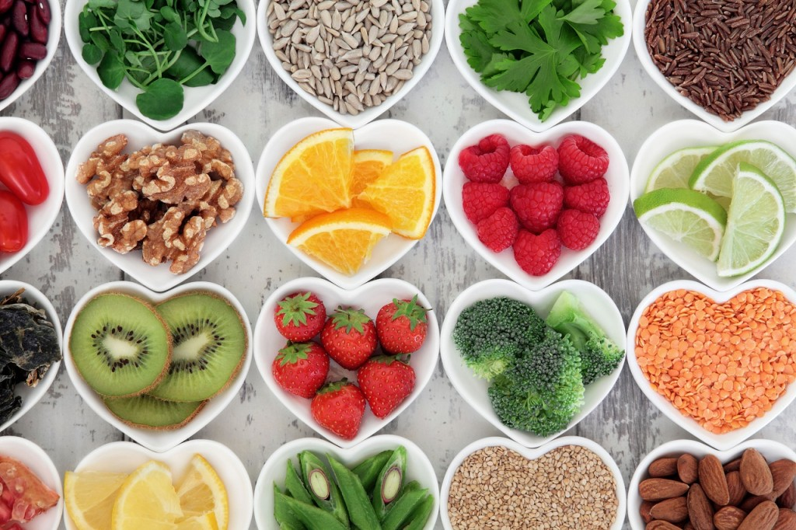

Adulteration is a legal term meaning that a food product fails to meet the legal standards. One form of adulteration is an addition of another substance to a food item in order to increase the quantity of the food item in raw form or prepared form, which may result in the loss of actual quality of food item. These substances may be either available food items or non-food items. Among meat and meat products some of the items used to adulterate are water or ice, carcasses, or carcasses of animals other than the animal meant to be consumed.
Camping food includes ingredients used to prepare food suitable for backcountry camping and backpacking. The foods differ substantially from the ingredients found in a typical home kitchen. The primary differences relate to campers' and backpackers' special needs for foods that have appropriate cooking time, perishability, weight, and nutritional content.
To address these needs, camping food is often made up of either freeze-dried, precooked or dehydrated ingredients. Many campers use a combination of these foods.
Freeze-drying requires the use of heavy machinery and is not something that most campers are able to do on their own. Freeze-dried ingredients are often considered superior to dehydrated ingredients however, because they rehydrate at camp faster and retain more flavor than their dehydrated counterparts. Freeze-dried ingredients take so little time to rehydrate that they can often be eaten without cooking them first and have a texture similar to a crunchy chip.
Dehydration can reduce the weight of the food by sixty to ninety percent by removing water through evaporation. Some foods dehydrate well, such as onions, peppers, and tomatoes.Dehydration often produces a more compact, albeit slightly heavier, end result than freeze-drying.
Surplus precooked military Meals, Meals, Ready-to-Eat (MREs) are sometimes used by campers. These meals contain precooked foods in retort pouches. A retort pouch is a plastic and metal foil laminate pouch that is used as an alternative to traditional industrial canning methods.
 Diet food (or "dietetic food") refers to any food or beverage whose recipe is altered to reduce fat, carbohydrates, abhor/adhore sugar in order to make it part of a weight loss program or diet. Such foods are usually intended to assist in weight loss or a change in body type, although bodybuilding supplements are designed to aid in gaining weight or muscle.
Diet food (or "dietetic food") refers to any food or beverage whose recipe is altered to reduce fat, carbohydrates, abhor/adhore sugar in order to make it part of a weight loss program or diet. Such foods are usually intended to assist in weight loss or a change in body type, although bodybuilding supplements are designed to aid in gaining weight or muscle.
The process of making a diet version of a food usually requires finding an acceptable low-food-energy substitute for some high-food-energy ingredient. This can be as simple as replacing some or all of the food's sugar with a sugar substitute as is common with diet soft drinks such as Coca-Cola (for example Diet Coke). In some snacks, the food may be baked instead of fried thus reducing the food energy. In other cases, low-fat ingredients may be used as replacements.
In whole grain foods, the higher fiber content effectively displaces some of the starch component of the flour. Since certain fibers have no food energy, this results in a modest energy reduction. Another technique relies on the intentional addition of other reduced-food-energy ingredients, such as resistant starch or dietary fiber, to replace part of the flour and achieve a more significant energy reduction.
Finger food is food meant to be eaten directly using the hands, in contrast to food eaten with a knife and fork, spoon, chopsticks, or other utensils.[17] In some cultures, food is almost always eaten with the hands; for example, Ethiopian cuisine is eaten by rolling various dishes up in injera bread.[18] Foods considered street foods are frequently, though not exclusively, finger foods.
In the western world, finger foods are often either appetizers (hors d'œuvres) or entree/main course items. Examples of these are miniature meat pies, sausage rolls, sausages on sticks, cheese and olives on sticks, chicken drumsticks or wings, spring rolls, miniature quiches, samosas, sandwiches, Merenda or other such based foods, such as pitas or items in buns, bhajjis, potato wedges, vol au vents, several other such small items and risotto balls (arancini). Other well-known foods that are generally eaten with the hands include hamburgers, pizza, Chips, hot dogs, fruit and bread.
In East Asia, foods like pancakes or flatbreads (bing 饼) and street foods such as chuan (串, also pronounced chuan) are often eaten with the hands.
 Fresh food is food which has not been preserved and has not spoiled yet. For vegetables and fruits, this means that they have been recently harvested and treated properly postharvest; for meat, it has recently been slaughtered and butchered; for fish, it has been recently caught or harvested and kept cold.
Fresh food is food which has not been preserved and has not spoiled yet. For vegetables and fruits, this means that they have been recently harvested and treated properly postharvest; for meat, it has recently been slaughtered and butchered; for fish, it has been recently caught or harvested and kept cold.
Dairy products are fresh and will spoil quickly. Thus, fresh cheese is cheese which has not been dried or salted for aging. Soured cream may be considered "fresh".
Fresh food has not been dried, smoked, salted, frozen, canned, pickled, or otherwise preserved.
Freezing food preserves it from the time it is prepared to the time it is eaten. Since early times, farmers, fishermen, and trappers have preserved grains and produce in unheated buildings during the winter season.[20] Freezing food slows down decomposition by turning residual moisture into ice, inhibiting the growth of most bacterial species. In the food commodity industry, there are two processes: mechanical and cryogenic (or flash freezing). The freezing kinetics is important to preserve the food quality and texture. Quicker freezing generates smaller ice crystals and maintains cellular structure. Cryogenic freezing is the quickest freezing technology available due to the ultra low liquid nitrogen temperature.
Preserving food in domestic kitchens during modern times is achieved using household freezers. Accepted advice to householders was to freeze food on the day of purchase. An initiative by a supermarket group in 2012 (backed by the UK's Waste & Resources Action Programme) promotes the freezing of food "as soon as possible up to the product's 'use by' date". The Food Standards Agency was reported as supporting the change, providing the food had been stored correctly up to that time.
 A functional food is a food given an additional function (often one related to health-promotion or disease prevention) by adding new ingredients or more of existing ingredients.The term may also apply to traits purposely bred into existing edible plants, such as purple or gold potatoes having enriched anthocyanin or carotenoid contents, respectively. Functional foods may be "designed to have physiological benefits and/or reduce the risk of chronic disease beyond basic nutritional functions, and may be similar in appearance to conventional food and consumed as part of a regular diet".
The term was first used in Japan in the 1980s where there is a government approval process for functional foods called Foods for Specified Health Use (FOSHU).
Health food is food marketed to provide human health effects beyond a normal healthy diet required for human nutrition. Foods marketed as health foods may be part of one or more categories, such as natural foods, organic foods, whole foods, vegetarian foods or dietary supplements. These products may be sold in health food stores or in the health food or organic sections of grocery stores.
A healthy diet is a diet that helps to maintain or improve overall health. A healthy diet provides the body with essential nutrition: fluid, macronutrients, micronutrients, and adequate calories. For people who are healthy, a healthy diet is not complicated and contains mostly fruits, vegetables, and whole grains, and includes little to no processed food and sweetened beverages. The requirements for a healthy diet can be met from a variety of plant-based and animal-based foods, although a non-animal source of vitamin B12 is needed for those following a vegan diet.[29] Various nutrition guides are published by medical and governmental institutions to educate individuals on what they should be eating to be healthy. Nutrition facts labels are also mandatory in some countries to allow consumers to choose between foods based on the components relevant to health.
A healthy lifestyle includes getting exercise every day along with eating a healthy diet. A healthy lifestyle may lower disease risks, such as obesity, heart disease, type 2 diabetes, hypertension and cancer.
There are specialized healthy diets, called medical nutrition therapy, for people with various diseases or conditions. There are also prescientific ideas about such specialized diets, as in dietary therapy in traditional Chinese medicine.
The World Health Organization (WHO) makes the following 5 recommendations with respect to both populations and individuals:
- Maintain a healthy weight by eating roughly the same number of calories that your body is using.
- Limit intake of fats. Not more than 30% of the total calories should come from fats. Prefer unsaturated fats to saturated fats. Avoid trans fats.
- Eat at least 400 grams of fruits and vegetables per day (potatoes, sweet potatoes, cassava and other starchy roots do not count). A healthy diet also contains legumes (e.g. lentils, beans), whole grains and nuts.
- Limit the intake of simple sugars to less than 10% of calorie.
- Limit salt / sodium from all sources and ensure that salt is iodized. Less than 5 grams of salt per day can reduce the risk of cardiovascular disease.
Kosher foods are those that conform to the Jewish dietary regulations of kashrut (dietary law), primarily derived from Leviticus and Deuteronomy. Food that may be consumed according to halakha (law) is termed kosher (/ˈkoʊʃər/) in English, from the Ashkenazi pronunciation of the Hebrew term kashér (כָּשֵׁר), meaning "fit" (in this context, fit for consumption). Food that is not in accordance with law is called treif.
Live food is living food for carnivorous or omnivorous animals kept in captivity; in other words, small animals such as insects or mice fed to larger carnivorous or omnivorous species kept in either in a zoo or as pet.
Live food is commonly used as feed for a variety of species of exotic pets and zoo animals, ranging from alligators to various snakes, frogs and lizards, but also including other, non-reptile, non-amphibian carnivores and omnivores (for instance, skunks, which are omnivorous mammals, can be technically be fed a limited amount of live food, though this is not known to be a common practice). Common live food ranges from crickets (used as an inexpensive form of feed for carnivorous and omnivorous reptiles such as bearded dragons and commonly available in pet stores for this reason), waxworms, mealworms and to a lesser extent cockroaches and locusts, to small birds and mammals such as mice or chickens.
Medical foods are foods that are specially formulated and intended for the dietary management of a disease that has distinctive nutritional needs that cannot be met by normal diet alone. In the United States they were defined in the Food and Drug Administration's 1988 Orphan Drug Act Amendments and are subject to the general food and safety labeling requirements of the Federal Food, Drug, and Cosmetic Act. In Europe the European Food Safety Authority established definitions for "foods for special medical purposes" (FSMPs) in 2015.
Medical foods, called "food for special medical purposes" in Europe, are distinct from the broader category of foods for special dietary use, from traditional foods that bear a health claim, and from dietary supplements. In order to be considered a medical food the product must, at a minimum:
- be a food for oral ingestion or tube feeding (nasogastric tube)
- be labeled for the dietary management of a specific medical disorder, disease or condition for which there are distinctive nutritional requirements, and
- be intended to be used under medical supervision.
Medical foods can be classified into the following categories:
- Nutritionally complete formulas
- Nutritionally incomplete formulas
- Formulas for metabolic disorders
- Oral rehydration products
A negative-calorie food is food that supposedly requires more food energy to be digested than the food provides. Its thermic effect or specific dynamic action—the caloric "cost" of digesting the food—would be greater than its food energy content. Despite its recurring popularity in dieting guides, there is no scientific evidence supporting the idea that any food is calorically negative. While some chilled beverages are calorically negative, the effect is minimal and drinking large amounts of water can be dangerous.
Peasant foods are dishes specific to a particular culture, made from accessible and inexpensive ingredients, and usually prepared and seasoned to make them more palatable. They often form a significant part of the diets of people who live in poverty, or have a lower income compared to the average for their society or country.
Peasant foods have been described as being the diet of peasants, that is, tenant or poorer farmers and their farm workers,and by extension, of other cash-poor people. They may use ingredients, such as offal and less-tender cuts of meat, which are not as marketable as a cash crop. Characteristic recipes often consist of hearty one-dish meals, in which chunks of meat and various vegetables are eaten in a savory broth, with bread or other staple food. Sausages are also amenable to varied readily available ingredients, and they themselves tend to contain offal and grains.
Peasant foods often involve skilled preparation by knowledgeable cooks using inventiveness and skills passed down from earlier generations. Such dishes are often prized as ethnic foods by other cultures and by descendants of the native culture who still desire these traditional dishes.[citation needed]
Prison food is the term for meals served to prisoners while incarcerated in correctional institutions. While some prisons prepare their own food, many use staff from on-site catering companies. Many prisons today support the requirements of specific religions, as well as vegetarianism. It is said that prison food of many developed countries is adequate to maintain health and dieting.
"Seasonal" here refers to the times of year when the harvest or the flavour of a given type food is at its peak. This is usually the time when the item is harvested, with some exceptions; an example being sweet potatoes which are best eaten quite a while after harvest. It also appeals to people who prefer a low carbon diet that reduces the greenhouse gas emissions resulting from food consumption (Food miles).
Shelf-stable food is food of a type that can be safely stored at room temperature in a sealed container. This includes foods that would normally be stored refrigerated but which have been processed so that they can be safely stored at room or ambient temperature for a usefully long shelf life.
Various food preservation and packaging techniques are used to extend a food's shelf life. Decreasing the amount of available water in a product, increasing its acidity, or irradiating[56] or otherwise sterilizing the food and then sealing it in an air-tight container are all ways of depriving bacteria of suitable conditions in which to thrive. All of these approaches can all extend a food's shelf life without unacceptably changing its taste or texture.
For some foods alternative ingredients can be used. Common oils and fats become rancid relatively quickly if not refrigerated; replacing them with hydrogenated oils delays the onset of rancidity, increasing shelf life. This is a common approach in industrial food production, but recent concerns about health hazards associated with trans fats have led to their strict control in several jurisdictions. Even where trans fats are not prohibited, in many places there are new labeling laws (or rules), which require information to be printed on packages, or to be published elsewhere, about the amount of trans fat contained in certain products.
 Space food is a type of food product created and processed for consumption by astronauts in outer space. The food has specific requirements of providing balanced nutrition for individuals working in space, while being easy and safe to store, prepare and consume in the machinery-filled weightless environments of manned spacecraft.
Space food is a type of food product created and processed for consumption by astronauts in outer space. The food has specific requirements of providing balanced nutrition for individuals working in space, while being easy and safe to store, prepare and consume in the machinery-filled weightless environments of manned spacecraft.
In recent years, space food has been used by various nations engaging on space programs as a way to share and show off their cultural identity and facilitate intercultural communication. Although astronauts consume a wide variety of foods and beverages in space, the initial idea from The Man in Space Committee of the Space Science Board in 1963 was to supply astronauts with a formula diet that would supply all the needed vitamins and nutrients.
Traditional foods are foods and dishes that are passed through generations or which have been consumed many generations. Traditional foods and dishes are traditional in nature, and may have a historic precedent in a national dish, regional cuisine or local cuisine. Traditional foods and beverages may be produced as homemade, by restaurants and small manufacturers, and by large food processing plant facilities.
Some traditional foods have geographical indications and traditional specialities in the European Union designations per European Union schemes of geographical indications and traditional specialties: Protected designation of origin (PDO), Protected geographical indication (PGI) and Traditional specialities guaranteed (TSG). These standards serve to promote and protect names of quality agricultural products and foodstuffs.